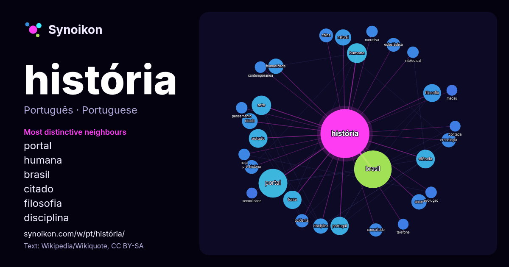

Português · palavra popular
história
“history” · As palavras encontradas ao seu redor em 1271 ocorrências da Wikipédia, Wikiquote.

Vizinhos mais característicos
- portal 49×
- humana 19×
- brasil 19×
- citado 16×
- filosofia 16×
- disciplina 14×
- humanidade 14×
- cronologia 14×
- pré-história 14×
- eclesiástica 13×
- consultado 13×
- arte 13×
- ciência 12×
- fonte 12×
- natural 11×
- amor 10×
- estudo 9.2×
- intelectual 8.9×
- portugal 8.7×
- contemporânea 8.6×
× = quantas vezes mais do que no texto geral da Wikipédia.
Vizinhos mais frequentes
- brasil 97
- portal 57
- humana 27
- arte 26
- país 26
- ciência 24
- estudo 24
- fonte 23
- portugal 23
- filosofia 22
- livro 22
- brasileiro 21
- mundo 21
- paulo 21
- região 20
- vida 19
- natural 18
- citado 17
- futebol 17
- período 17
Em contexto
- Nota: Para outros significados, veja História (desambiguação). História (do grego antigo ἱστορία, transl.: historía, que significa "pesquisa", "conhecimento Wikipedia snippets · História
- Nota: Para outros significados, veja História do Brasil (desambiguação). História do Brasil começa com a chegada dos primeiros humanos na América do Sul Wikipedia snippets · História do Brasil
- do Sul (inclusive Curitiba), em 1649. Os primeiros nomes que surgem na história de Curitiba, após Ébano Pereira, são os de Baltasar Carrasco dos Reis e Wikipedia snippets · Curitiba
- Arturo: La verdadera historia que inspiró la leyenda, Saving Private Ryan e Ballykissangel. Também filmes relembram a história do país, como Michael Wikipedia snippets · Irlanda
- junho de 2010. Arquivado do original em 8 de junho de 2010 «O Gato na História». www.intercat.com.br/index01.htm. Consultado em 15 de junho de 2009. Cópia Wikipedia snippets · Gato
- A História da arquitetura é uma disciplina académica, inserida no campo da História da Arte, que se dedica ao estudo sistemático da evolução das formas Wikipedia snippets · História da arquitetura
- A Pré-História é o período da história humana entre o primeiro uso conhecido de ferramentas de pedra por hominídeos, há c. 3.3 milhões de anos, e o início Wikipedia snippets · Pré-história
- Nota: Para outros significados, veja História de Portugal (livro). A história de Portugal como nação europeia remonta à Baixa Idade Média, quando o condado Wikipedia snippets · História de Portugal
Mais palavras
- arte
- ciência
- clima
- comida
- coração
- cão
- deus
- dinheiro
- família
- força
- gato
- língua
- morte
- natureza
- ouro
- ponte
- saúde
- trabalho
- trem
- verdade
- vida
- água
Pré-calculado em 2026-10-09 com as configurações padrão (±5 palavras, corpus médio). O mapa interativo pode atualizá-lo com dados ao vivo.
Interface traduzida automaticamente; correções são bem-vindas.